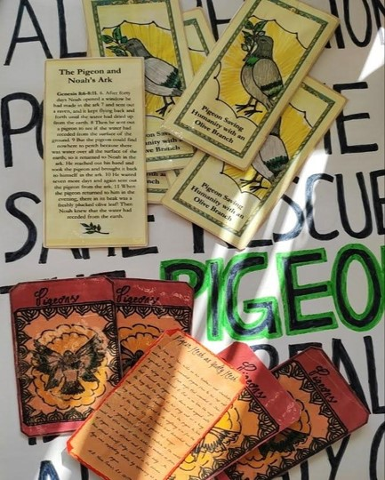

Peter Von Cornelius. The three Marys at the sepulcher. Inspired from the Gospel of Luke XXIV. From here

Ludovica Schaerf. Pigeon religion fliers and poster.
Projects in Design and Critical Futures
The projects focus on critical futures for cults and ritual functions. A glimpse of a world where religion meets urban animals and AI.